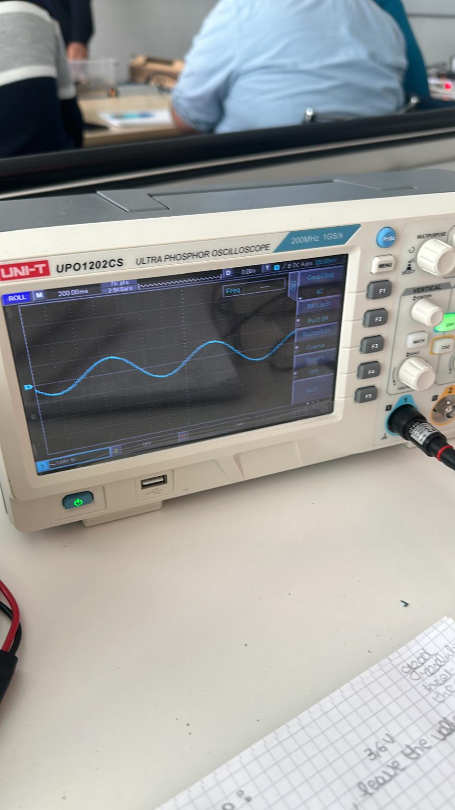
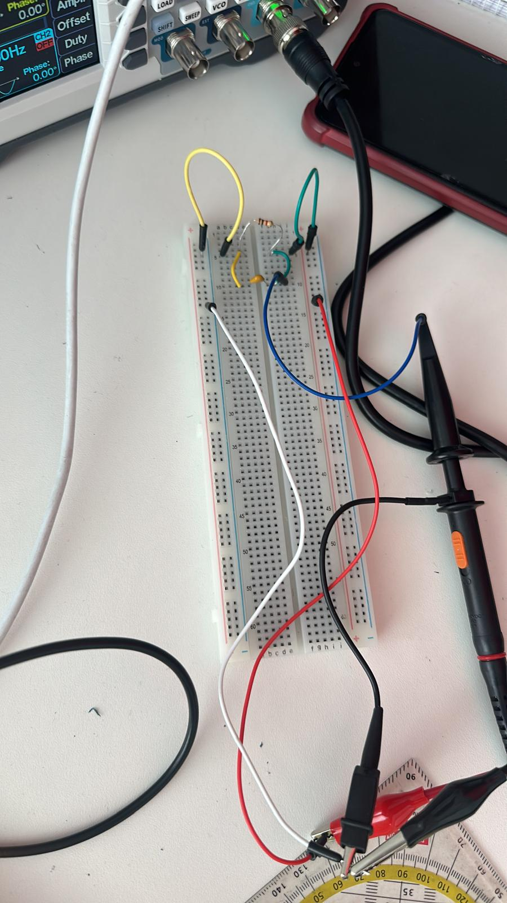

Featured experience
This project involved the design and implementation of an analog low-pass filter on a custom circuit board. The purpose of the filter was to attenuate high-frequency components of an input signal while allowing low-frequency signals to pass through. Using an RC configuration, the circuit demonstrated signal smoothing and noise reduction, which was visualized through oscilloscope measurements comparing input and output waveforms.


Designed and calculated component values (resistor and capacitor) for desired cutoff frequency. Built and soldered the circuit on a physical board. Measured input and output signals using an oscilloscope. Analyzed frequency response and signal attenuation. Verified theoretical results with practical observations.
Analog electronics and circuit design. Signal processing fundamentals. Oscilloscope usage and waveform analysis. Soldering and PCB prototyping. Mathematical modeling of RC circuits.
This project strengthened my understanding of signal filtering and frequency domain behavior in real systems. It demonstrated how theoretical electrical engineering concepts translate into practical applications such as noise reduction, sensor signal conditioning, and communication systems.